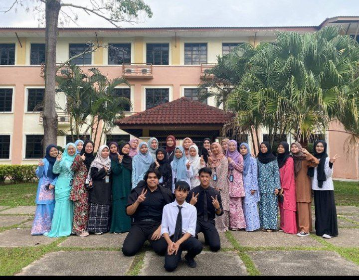

UiTM KEDAH
"I am currently pursuing a diploma in Information Management at UiTM Kedah, a program that spans two years. I've had the opportunity to meet incredibly kind and supportive classmates who make the learning experience even more enjoyable. Studying at UiTM Kedah has also exposed me to new experiences and valuable lessons that are shaping my personal and academic growth. " 
Achievement

"During my time at UiTM Kedah, I am proud to have maintained excellent grades each semester, reflecting my commitment and hard work in my studies. Recently, I also had the opportunity to join the JPK MURNI club, which has been a rewarding experience. Through this involvement, I gained valuable skills in organizing and managing programs. These achievements are milestones in my university journey, and they motivate me to strive for more.